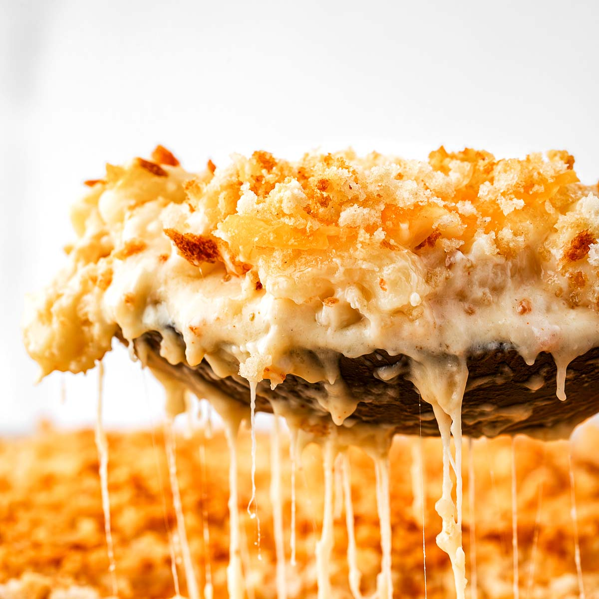

Mac and Cheese

Description
For my very first Friendsgiving, in college, I made this recipe for us. For those of you who don't know what
a Friendsgiving is, it's a potluck style dinner with your friends a la Thanksgiving, from where it gets its name.
Friendsgiving was a holiday staple within my college friend group; we loved family dinner nights, where we cooked
for each other, and here was a way to almost formalize it -- to turn it into a celebration of sorts! I wasn't much
of a cook before college, so making this for my first Friendsgiving was quite nervewracking. However, it was a huge
hit; they licked my tray clean :). I've never felt such a rush before. I hope you can replicate that feeling for
yourselves. Let's get into it!
Ingredients
- 16 oz elbow macaroni (or any tubular pasta of your choice)
- 1 tbsp extra virgin olive oil
- 6 tbsp unsalted butter
- 1/3 cup all purpose flour
- 3 cups whole milk
- 1 cup heavy whipping cream
- 4 cups sharp cheddar cheese, shredded
- 2 cups Gruyere cheese, shredded
- salt and pepper to taste
- 1.5 cups panko bread crumbs
- 4 tbsp melted butter
- 3 tbsp olive oil
- 1/2 cup parmesan cheese, grated
- 1/4 tbsp smoked paprika
Okay! Now that we have all the ingredients out of the way, let's get into the actual steps of the recipe.
Instructions
- Preheat your oven to 350F. Lightly grease a large 3 or 4 qt baking dish and set aside. Combine shredded cheeses
in a large bowl and set aside.
- Cook pasta a minute or so shy of al dente according to package instructions, and drain well. Place in a large
bowl.
- Drizzle olive oil on pasta and stir until thoroughly coated. Set aside to let cool while you prepare the cheese
sauce.
- Melt butter in deep saucepan, dutch oven, or crockpot
- Whisk in flour on medium heat for around 1 minute until golden and bubbly.
- Gradually whisk in milk and heavy cream until nice and smooth. Whisk until you see bubbles on the surface,
and then continue whisking for another 2 minutes. Whisk in salt and pepper.
- Add 2 cups of shredded cheese and whisk until smooth. Repeat. The sauce should be nice and thick.
- Stir in the cooled pasta. Make sure it is thoroughly coated in the cheese sauce.
- Pour half of the mac and cheese into the prepared baking dish. Top with the remaining 2 cups of shredded cheese,
then pour in the rest of the mac and cheese.
- In a small bowl, combine your panko crumbs, parmesan cheese, melted butter and paprika. Sprinkle over the top
and bake for around 30 minutes. It should look bubbly and golden brown.
And you're all done! I hope this recipe serves you as well as your friends and family well at whatever function you
bring it to. Have a great day!